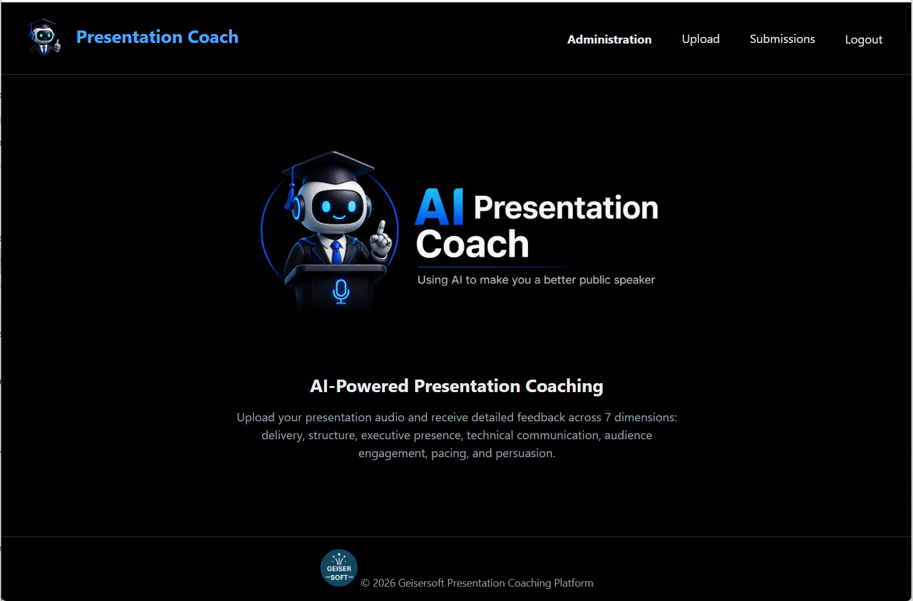
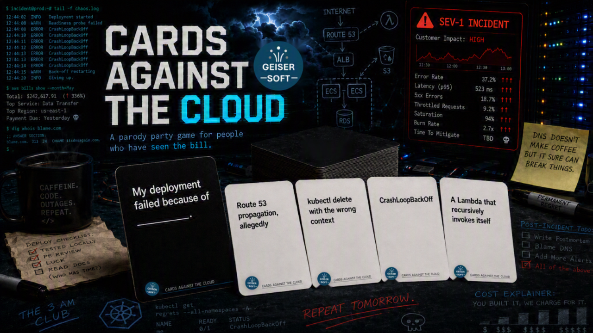
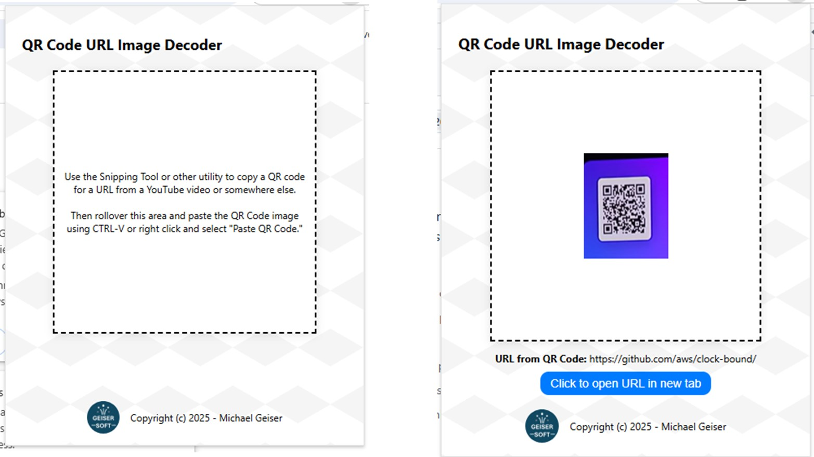

About Us
GeiserSoft is really just my vanity site for my personal projects. I also really wanted to build a site served from S3 fronted by CloudFront and WAF.
You can read about how to do it in an article a wrote for Medium: “Setting Up a Static Website on AWS in a Secure Way in 2026”
Projects and fun
We develop simple yet powerful tools to solve everyday problems. Here are some of our current projects:
AI Presentation Coach

Presentation Coach is an Agentic App I created. It has a Web front end that allows you to upload an Audio file. The file is prepared and passed to AgentCore where 7 Agents evaluate the presentation and provide an in-depth report so you can use it to improve your presentation skills.
This is in a state that I call a "production-shaped" PoC: The architecure uses Cloud native serverless managed services so functional and load testing should identify few significant architectural changes in order to get this from PoC to Production.
Cards Against the Cloud

Cards Against the Cloud is a party game for people who have explained a five-figure cloud bill to a CFO who thought the cloud was free. Think Cards Against Humanity with an AWS certification, for cloud architects, DevOps engineers, platform teams, and anyone who has been on call.
The deck has 550 original cards poking fun at AWS, Azure, GCP, OCI, Kubernetes, Terraform, IAM, FinOps, AI hype, and the general indignity of enterprise IT.
What's included:
- Print-ready black (prompt) and white (answer) card PDFs, nine cards per page at standard playing card size
- Full rules of play plus nine optional house rules
- Blank card templates so you can write your own
- Licensed under Creative Commons Attribution 4.0, so share, remix, and expand it
QR Code URL Parser

The QR Code URL Parser is a Chrome extension that allows you to easily decode QR codes found on webpages, videos, or any other content displayed in your browser, a PDF, Word doc, or really just about any source on your computer.
See the code in Github: Github repo
Key Features:
- Use the Windows/Mac snipping tool to clip a QR code from a YouTube video, image, or other source
- Paste the QE code into the tool and instantly decode a URL embedded in a QR code
- Open the decoded URL in a new tab with a single click
- Works with QR codes from websites, videos, images, and more
This tool is perfect for quickly accessing websites shared via QR codes without needing to use your phone or a separate QR scanner.
Get the ExtensionWriting and Ramblings
The Suspect Who Never Existed: Using AI and LoRA to Build Interview Training Personas
Using MCP Servers in Agentic AI Applications
The Production-Shaped PoC: Getting your Agentic AI PoC to Prod
Beyond Agents: Why the Biggest AI Revolution Hasn't Happened Yet
Setting Up a Static Website on AWS in a Secure Way in 2026
When your AI Model Just…Disappears
Zombie AWS instance Types: It’s Time to Move On
Enhancing My Chrome Extension using Vibe Coding and Amazon Q Developer
Using Q Developer to Create a Chrome Extension in 60 Minutes